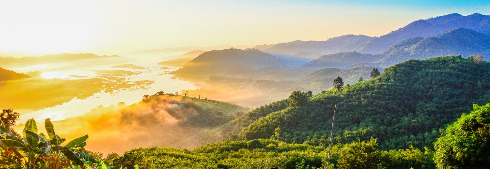
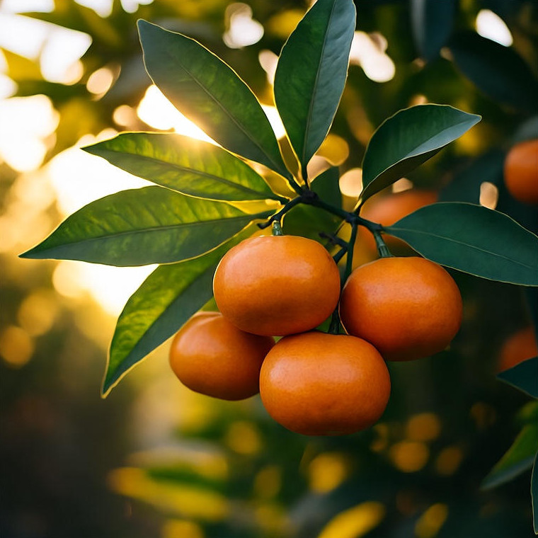
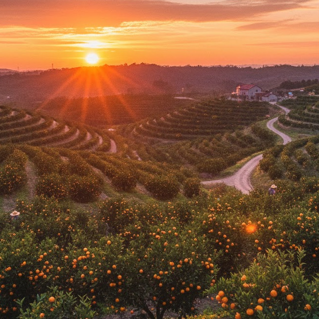
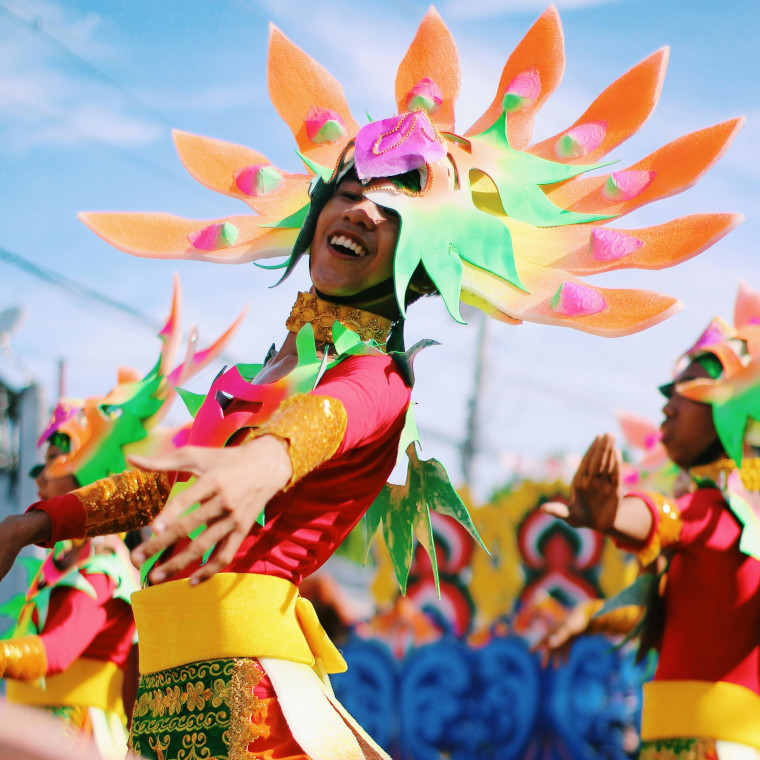

Smaki Mandaryni

Piękne krajobrazy

Bogata kultura
Ciekawostki o Mandarynii
- Mandarynia jest globalnym liderem w produkcji i dystrybucji mandarynek, kontrolując około 99% światowego eksportu tego cytrusa.
- Kraj ten jest sławny z licznej populacji gatunku ptaka wodnego mandarynka, znajdującego się na fladze oraz godle.
- Jeden z najstarszych zapisów w języku mandaryńskim odnaleziono na terenach dzisiejszej Mandarynii.